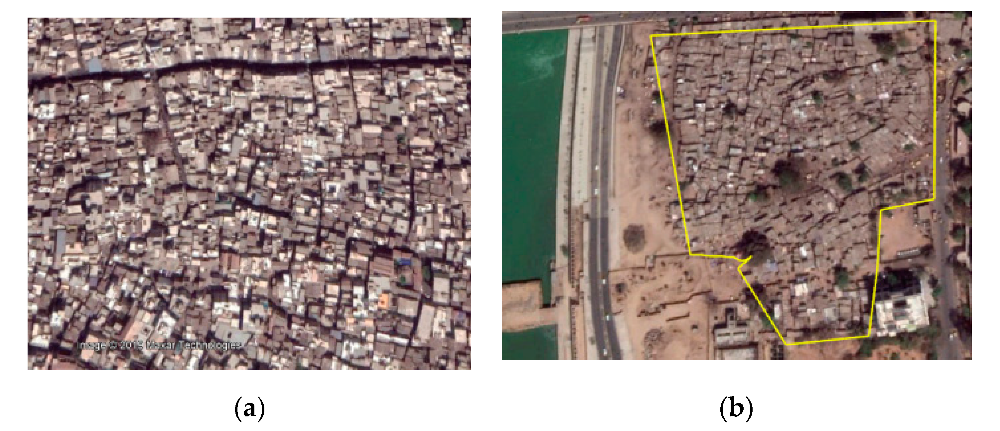

Capstone Proposal
Mapping Deprived Areas in Low and Middle Income Countries (LMIC) - Part 1
Proposed by: Dr. Ryan Engstrom
Email: rengstro@gwu.edu
Advisor: Amir Jafari
The George Washington University, Washington DC
Data Science Program
1 Objective:
The goal of this project is to develop a methodology to map of deprived areas using a range of geospatial data
at approximately 100m grid cells. This will help cities understand the spatial pattern of Sustainable Development
Goal 1 (Poverty) and Sustainable Development Goal 11 (sustainable cities and Communities). Want to use a
combination of open source geospatial data and satellite imagery to map variations in poverty. Allow for
comparisons between cities and determine if models made in one city can be used in another city.
This project could possibly be funded by the European Space Agency (for 8 cities) and theoretically
could be expanded to the entire developing world.
 Figure 1: Caption
2 Dataset:
Dr. Ryan is going to provide us the data and the location of it.
We have a geospatial data for these three cities: Lagos Nigeria, Accra Ghana and Nairobi Kenya. Each city there is a
series of covariates at 100m grid cells. There are 166 individual tif files that are aligned to the same grid for
the cities. There are approximately 50-60 for each city. These data sets represent infrastructure, social economic
status (SES), facilities and services, physical hazards and assets and others. The number of covariates varies by
city, but there is a set that is common to all of the cities.
For each city we are working on extracting Sentinel 2 imagery (10m spatial resolution) for each city. We are running
contextual features for each city. This produces 144 layers from the imagery that map spatial patterns and estimates
of vegetation. These features are calculated on the same grid and in such a way that a 10x10 group of pixels matches
each 100m grid cell. Imagery is collected from Google Earth Engine (Training and validation Data). For Lagos and Accra
we have created a training and validation data set at the grid cell level. Training data is Deprived residential,
Other Built, and non-built. Model Attributes: Want to be able to model deprivation estimate at the 100m grid cell
level. Test different models to be able to do this. Also, estimate of degree of deprivation, produce a scale of
deprivation so that city governments can set this level themselves and play around with the models.
3 Rationale:
This project is going to help agencies to tackle poverty and help countries.
4 Approach:
I plan on approaching this capstone through several steps.
1. Automate data capturing from Google Earth Engine (Python code in the engine).
2. Work on the covariate features importance.
3. Use covariate features to model degree of poverty (Classical Models).
4. Use a model developed in on city and apply it to other cities (Transfer Learning)
5. Combine satellite images with covariate features.
5 Timeline:
This a rough time line for this project:
- (3 Weeks) Data Automation.
- (3 Weeks) Feature Importance
- (4 Weeks) Modeling
- (2 Weeks) Combine satellite images with covariate features
- (1 Weeks) Compiling Results
- (1 Weeks) Writing Up a paper and submission
- (1 Weeks) Final Presentation
6 Expected Number Students:
For this project maximum 4 students can work on it.
7 Possible Issues:
The challenge is on data analysis part , find a good features and train a decent model.
Contact
- Author: Amir Jafari
- Email: ajafari@gmail.com
- GitHub: https://github.com/amir-jafari/Capstone